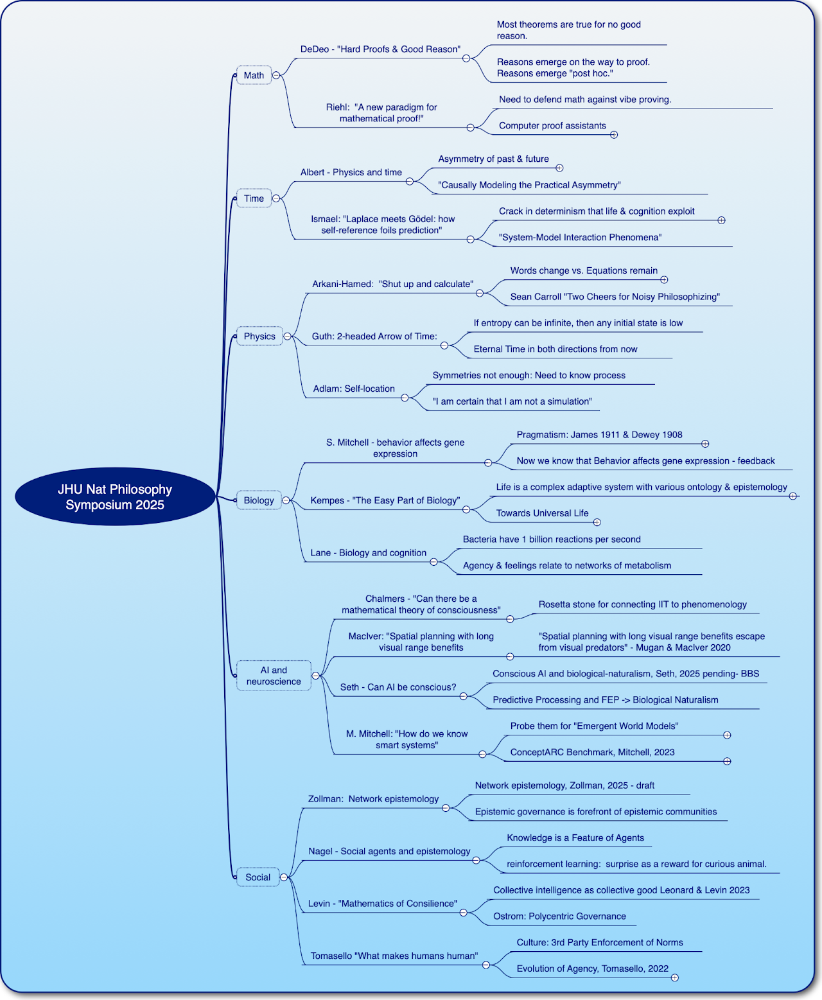

An international symposium on all aspects of natural philosophy — exploring the frontiers of understanding of ourselves and the universe at all scales. Reviewed by George Percivall from the perspective of AI engineering and the Spatial Web.
Overview
George Percivall's review and evaluation of the JHU Natural Philosophy Symposium 2025, with focus on AI/Neuroscience and Social themes.
The Johns Hopkins Natural Philosophy Forum hosted an international symposium on all aspects of natural philosophy on May 29–31, 2025. It featured a broad set of topics on the frontiers of understanding of ourselves and the universe at all scales. The symposium was superbly hosted by Sean Carroll and Jenann Ismael.
The program ranged across Math, Time, Physics, Biology, AI and Neuroscience, and Social themes — as captured in the mind map below. My main takeaways were in the AI/Neuroscience and Social categories, which have the most direct relevance to GeoRoundtable's work on agentic systems, the Spatial Web, and philosophy-informed engineering.
Based on what started at the JHU Symposium, I look forward to further development and conversations on these topics.

Mind map of the JHU Natural Philosophy Symposium 2025 — organized by theme: Math, Time, Physics, Biology, AI & Neuroscience, and Social.
GeoRoundtable Connection
Natural philosophy is not a historical curiosity — it is a living discipline asking questions engineering cannot afford to ignore. As AI systems grow more capable, questions about the nature of intelligence, consciousness, agency, and knowledge become directly relevant to architectural and governance decisions.
The symposium's themes map directly onto GeoRoundtable's core interests: emergent world models and AI evaluation (Mitchell), biological naturalism and the Spatial Web agent framework (Seth), network epistemology and the Universal Domain Graph (Zollman), and collective intelligence as public infrastructure (Levin).
George Percivall's sustained engagement with the MALA program at St. John's College reflects the same conviction: rigorous classical education in natural philosophy is continuous with the most pressing challenges in contemporary AI engineering.
Program Themes
Math · Time · Physics · Biology · AI & Neuroscience · Social
Speakers included DeDeo, Riehl, Albert, Ismael, Arkani-Hamed, Guth, Adlam, S. Mitchell, Kempes, Lane, Chalmers, MacIver, Seth, M. Mitchell, Zollman, Nagel, Levin, Tomasello, and others.
Main Takeaways — AI/Neuroscience & Social
Six talks from the symposium with direct relevance to GeoRoundtable's work on agentic systems, the Spatial Web, and network epistemology.
Mitchell's talk discussed benchmarks for AI and methods to probe for "emergent world models." The central question: does a GPT create a world model or merely a bag of heuristics? Mitchell argues that standard NLP benchmarks are insufficient to answer this — they measure performance on tasks that can be solved by pattern matching without genuine understanding.
An Abstraction & Reasoning Corpus (ARC) Benchmark may be a better way to assess AI abilities on a number of basic spatial and semantic concepts — requiring genuine compositional reasoning rather than statistical pattern completion. This has direct implications for how we evaluate and trust AI systems in safety-critical roles.
Seth makes the case that consciousness depends on our nature as living organisms — a form of biological naturalism. The presentation argues for biological naturalism grounded in active inference, cybernetics, autopoiesis, and the free energy principle. On this account, current AI systems, however sophisticated, lack the biological and physiological grounding that underpins subjective experience.
Seth's approach is of particular interest to the Spatial Web Foundation development of an agent framework — providing a principled philosophical basis for distinguishing AI agents from conscious agents, and for calibrating governance and oversight accordingly. There is an open call for comments on Seth's draft BBS paper.
Core to Chalmers' talk was assessing the prospects for objective phenomenology — and the need to translate phenomenology into math to achieve it. Chalmers aimed to define a "Rosetta Stone" vocabulary for connecting Integrated Information Theory of consciousness to phenomenology.
His thesis: math may be central to an objective theory of subjective experience. This parallels the Spatial Web's use of mathematics (hyperspace, tensors, HSML) to formalize world models — and raises a deeper question about whether formal mathematical representations can capture the full structure of experience and knowledge.
Tomasello discussed main types of psychological agency and describes them in evolutionary order of emergence — from goal-directed agency in ancient vertebrates through intentional, rational, and finally socially normative agency unique to humans.
This evolutionary typology forms a cornerstone of GeoRoundtable's approach to agentic AI design and governance. Understanding where artificial agents sit on this continuum — and what capacities distinguish each level — is not optional background but essential design knowledge for building and governing AI systems. I look forward to more in reading Tomasello's "The Evolution of Agency: Behavioral Organization from Lizards to Humans."
Zollman's talk, and our subsequent side conversation, focused on Network Epistemology — "how does the structure of our social networks influence our ability to learn about the world?" Zollman's Independence Thesis — that the norms of social epistemology are independent of the norms of individual epistemology — is key to understanding the difference between intelligent agents and the knowledge created by an ecosystem of agents.
This is a key topic in the design of the Universal Domain Graph of the Spatial Web: how the structure of agent connections shapes the collective knowledge that emerges. Zollman made the point that epistemic governance is at the forefront of epistemic communities. Be sure to keep an eye out for Zollman's forthcoming book — "How Social Connections Shape Knowledge."
Levin's talk included discussion of collective intelligence as a public good. Levin pointed out the role of the commons and reference to Elinor Ostrom's work on polycentric governance — a framework for managing shared resources through distributed, overlapping governance structures rather than central control.
Levin's work on measures of collective intelligence in evolved and designed self-organizing ensembles is directly relevant to the design and implementation of Spatial Web collective intelligence: understanding how collective knowledge and coordinated action emerge from networks of agents, and how governance of those networks can be structured to produce public goods rather than tragedies of the commons.
"Based on what started at the JHU Symposium, I look forward to further development and conversations on these topics."
— George Percivall · GeoRoundtable
The JHU Natural Philosophy Symposium brought together scientists and philosophers across Math, Time, Physics, Biology, AI & Neuroscience, and Social themes — with direct implications for how we design, evaluate, and govern agentic AI systems.
The threads run deep: Mitchell's question about emergent world models goes to the heart of AI evaluation and safety assurance. Seth's biological naturalism sets principled boundaries for the Spatial Web agent framework. Zollman's network epistemology illuminates the design challenges of the Universal Domain Graph. Levin's collective intelligence connects to the Spatial Web's ambitions as a shared public infrastructure for AI coordination.
Together, these conversations affirm GeoRoundtable's conviction that natural philosophy is not separate from engineering — it is engineering's deepest foundation.
Engineering Relevance
Four themes from the symposium that connect directly to GeoRoundtable's philosophy-informed engineering practice.
Mitchell's ARC Benchmark challenge reframes AI evaluation from performance metrics to architectural questions. Whether a system has a genuine world model or a bag of heuristics determines its reliability, safety, and appropriate scope of deployment — and demands philosophy-informed evaluation methods alongside technical ones.
Tomasello's evolutionary typology of agency provides a rigorous, non-binary framework for thinking about AI agents. Where on the continuum of goal-directed, intentional, rational, and socially normative agency do current AI systems sit? This question is prerequisite to any principled approach to AI governance and capability assessment.
Zollman's Independence Thesis — that social epistemology has its own norms, independent of individual epistemology — has profound implications for multi-agent AI architecture. The structure of agent connections shapes what the ecosystem knows. Epistemic governance is not just a policy question; it is a systems design question.
Levin's connection of collective intelligence to Ostrom's polycentric governance offers a powerful framework for the Spatial Web: not a centrally controlled world model, but a commons governed by distributed, overlapping institutions — designed to sustain collective intelligence as a public good rather than a proprietary resource.
Related Work
Interested in how natural philosophy connects to AI architecture, governance, and socio-technical systems design? Get in touch.
✉️ percivall@ieee.org